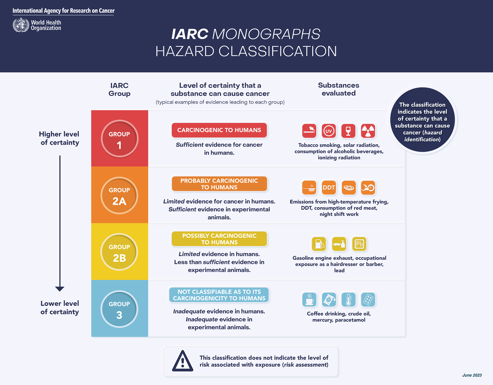

现代饮食指南

- huuhghhgyg
- 2 min read

参考来源：本指南基于 YouTube 视频 《xx臭骂中餐：盘点中国饮食10大垃圾食品！》 的核心观点进行事实核查与科学修正。
适用范围：全年龄段（18+至老年）。
核心差异：年龄越小，身体对不良饮食的 “缓冲能力” 越强；年龄越大，执行标准需越严格。
被误读的“糖”与“代糖”
为什么“真糖”是现代饮食的头号反派？
📺 视频观点：“中国奶茶最大的问题就是即使半糖也是纯糖……真糖是毒药，必须戒。”
🧪 科学修正：结论基本正确。全糖奶茶和含糖咖啡确实是现代人的代谢杀手。
- 视频点名食品：全糖/半糖奶茶、含糖咖啡、超市含糖饮料（冰红茶等）。
- 代谢路径：
- 蔗糖/果葡糖浆：当你喝下一瓶全糖饮料，大量的果糖不需要胰岛素搬运，直接进入肝脏。肝脏无法一次性处理这么大的量，只能将其转化为脂肪（甘油三酯）。
- 后果：长期摄入会导致脂肪肝、胰岛素抵抗（糖尿病的前奏）和蛋白质糖化（皮肤变老、血管硬化）。
- 年龄差异：
- 18-25岁：如果你的运动量极大（如校队运动员），这部分糖可能会被肌肉快速消耗。
- 30岁+ / 久坐族：肝脏早已不堪重负，每一口添加糖都在增加代谢负担。
“代糖”的真相：不是神药，是工具
📺 视频观点：“代糖完美无害，随便喝……只有愚蠢的人才不敢喝代糖。”
🧪 科学修正：观点过于极端。代糖并非“完美无害”，存在潜在风险，不能把它当水喝。
-
视频点名食品：零度可乐、代糖奶茶、代糖咖啡。
-
机制解析与科学依据：
- 阿斯巴甜/安赛蜜（零度可乐）：目前研究认为主要风险在于“改变肠道菌群”和“维持甜食上瘾”。虽然 WHO 下属 IARC 在 2023 年将其列为 2B 类致癌物（可能致癌），但 JECFA（联合专家委员会）维持了其每日允许摄入量，认为在常规剂量下是安全的。
- 依据：Aspartame hazard and risk assessment results released (International Agency for Research on Cancer (IARC) & JECFA, 2023).  补充：阿斯巴甜虽然被列为2B类致癌物，但酒精（酒）是1类致癌物，红肉（猪肉牛肉）是2A类致癌物。
- 赤藓糖醇：最新的研究指出，其高浓度可能增强血小板反应性，进而增加血栓风险。这提示我们：不要把它当水喝，尤其是有心血管基础问题的人群。
- 依据：Witkowski, M., et al. “The artificial sweetener erythritol and cardiovascular event risk.” Nature Medicine, 2023.
-
控重效果：长期来看，代糖并不能带来显著的体脂减少，且可能与 2 型糖尿病和心血管疾病风险增加有关。 依据：Use of non-sugar sweeteners: WHO guideline (WHO, 2023) —— 建议不要使用非糖甜味剂来控制体重或降低非传染性疾病风险。
-
分级指南：
- Level 1 (最差)：全糖饮料。
- Level 2 (过渡)：代糖饮料。对于全年龄段，用无糖可乐替代全糖可乐，都是健康收益 > 风险的正确选择。
- Level 3 (最佳)：水、茶、黑咖啡。
水果的“基质”理论
📺 视频观点：“水果全是垃圾……葡萄就是糖水……吃葡萄跟你拿勺子吃糖没区别。”
🧪 科学修正：错误。混淆了“完整水果”与“游离糖（果汁）”的区别。
为什么“喝果汁”和“吃水果”是两回事？
- 视频点名食品：阳光玫瑰（葡萄）、荔枝、樱桃、芒果、火龙果、香蕉、哈密瓜、西瓜。
- 机制解析：
- 食物基质（Food Matrix）：完整的水果中，糖分是被膳食纤维的网格包裹住的。当你咀嚼、消化时，糖分是缓慢释放进血液的，胰岛素平稳分泌。依据：WHO Guideline: Sugar intake for adults and children —— 区分“游离糖”（Free Sugars，如果汁中的糖）和“内源性糖”（Intrinsic Sugars，完整水果中的糖），建议限制前者，鼓励后者。
- 破壁之后：榨汁机破坏了纤维网。一杯橙汁 = 3个橙子的糖分 + 0纤维。这在生理上等同于喝糖水，血糖会瞬间飙升。
- 高糖水果（如阳光玫瑰）的真相：
- 它们确实是“自然界的糖果”，糖密度很高。视频中提到的这些高糖水果，对于需要严格控糖的人确实要少吃，但不能说是“垃圾”。 它们依然含有抗氧化剂和微量元素。
- 年龄与运动量的差异：
- 18+ (高运动量)：健身后吃一串葡萄或两根香蕉，有助于肌糖原恢复，是良性的。
- 30+ (久坐)：晚饭后坐着不动吃一斤葡萄，多余的果糖只能变成脂肪。
避坑指南
- 拒绝：一切果汁（哪怕是鲜榨）、果脯、水果罐头。
- 控制：视频中点名的巨峰/阳光玫瑰葡萄、冬枣、荔枝、哈密瓜（高糖密度）。
- 推荐：莓果类（蓝莓/草莓）、柑橘类、苹果、梨、番石榴。
脂肪的“伪装”与热量密度
麻酱与花生酱：矿物质丰富但热量惊人的“脂肪酱”
📺 视频观点：“麻酱、花生酱是垃圾食品……就是在喝油。”
🧪 科学修正：判断准确。虽然微量元素丰富，但为了吃到它们而付出的热量代价太高。
- 视频点名食品：麻酱、花生酱（火锅蘸料、麻辣烫、拌面）。
- 机制解析：
- 好的方面（高微量元素）：芝麻酱的钙含量极高（约 600-1170mg/100g，是牛奶的 10 倍以上），铁和维生素 E 也很丰富。
- 坏的方面（极高热量）：脂肪含量高达 50% 以上，热量约 630kcal/100g（吃 100g 芝麻酱的热量 ≈ 3 碗米饭）。
- 核心矛盾：它富含钙，但这些钙是“泡在油里”的。如果你想通过吃芝麻酱补够一天的钙，你同时得喝下半碗油。性价比极低。
- 分级指南：
- 作为调味：每天一勺（约10-15g），作为风味点缀和微量元素补充是合理的。
- 作为主食：半碗酱拌面，对于任何年龄且没有重体力劳动的人来说，都是过剩的热量炸弹。
中式煲汤：所谓的“精华”其实是脂肪乳化液
📺 视频观点：“中式煲汤全是垃圾……汤里只有油……月子餐喝汤导致产后抑郁。”
🧪 科学修正：正确。这是中式饮食中最大的误区之一。
- 视频点名食品：鸡汤、排骨汤、鱼汤、老鸭汤、猪脚汤、月子餐。
- 机制解析：
- 汤为什么是白色的？那是脂肪微粒在水中形成的乳浊液（Fat Emulsification）。
- 营养在哪里？95%以上的蛋白质仍锁在肉的肌纤维里；钙质如果不加酸熬煮几乎不溶于水。
- 结论：喝汤 = 喝“油水混合物” + 盐。
- 修正建议：
- 18+：如果你在增肌期，为了凑热量喝两口没事，但别指望它补钙。
- 30+ / 产后 / 康复期：绝对不要为了“滋补”狂喝汤。这会导致脂肪摄入超标、盐摄入超标，反而阻碍身体恢复和身材管理。请吃肉！
看不见的“隐形油”
- 视频点名食品：水煮鱼、水煮肉、牛油火锅、五花肉、红烧肉、肥牛、肥羊、猪脖子肉、烤鸭皮。
- 修正建议：
- 食材吸油：水煮类菜肴看似有水，实则表面浮着厚厚一层油。蔬菜（如生菜、冻豆腐）在红油锅里煮，吸油率极高。
- 饱和脂肪：五花肉、肥牛等，其美味来源就是大量饱和脂肪。偶尔吃没问题，但不要将其作为日常蛋白质的主要来源，尤其是30岁以后。
最危险的组合——“糖油混合物”
📺 观点：“烧饼、油条、月饼全是垃圾……碳水炸弹。”
🧪 科学修正：完全正确。这是最糟糕的食物组合。
为什么“油条/酥皮”比单纯的吃肉或吃饭更可怕？
- 视频点名食品：
- 早餐类：油条、炸糕、豆腐脑卤汁（含淀粉勾芡）、煎饼果子、肠粉。
- 点心类：烧饼（麻酱/糖火烧）、酥饼、大八件、小八件、金八件、莲花酥、馅饼。
- 节日类：月饼、年糕、粽子、元宵。
- 机制解析：
- 双重打击：精制碳水（面粉/糖）迅速升高血糖 -> 刺激胰岛素大量分泌（开启储存模式）。
- 趁火打劫：此时血液中充满了来自酥油/猪油的大量脂肪。
- 结果：胰岛素把这些脂肪迅速搬运到脂肪细胞（尤其是腹部），而且这种组合会破坏大脑的“饱腹感信号”，让你停不下来。
- 年龄差异：
- 18+：你的代谢像烈火，偶尔吃一顿，第二天少吃点能平衡回来。但如果养成把油条当早餐的习惯，到了25岁以后，你会发现肚子怎么都减不下去。
- 30+：这是一条红线。每一次放纵都需要数倍的有氧运动来抵消。
补品与“智商税”的本质
📺 观点：“燕窝阿胶全是智商税……性价比极低。”
🧪 科学修正：基本正确。从现代营养学角度看，性价比极低。
燕窝、阿胶的营养学拆解
- 视频点名食品：燕窝、阿胶、海参、人参、冬虫夏草、鹿茸、红糖、银耳。
- 机制解析：
- 人体无法直接吸收“胶原蛋白”或“燕窝酸”。所有的蛋白质吃进去，都会被胃酸和酶分解成氨基酸，然后再由身体重新组装。
- 性价比：燕窝的原料（氨基酸组成）并不比鸡蛋、银耳或牛奶优越多少，但价格相差千倍。且为了口感，加工过程常伴随糖渍（冰糖燕窝）。
- 理性消费：
- 如果你经济宽裕，吃它为了心情愉悦（安慰剂效应），没问题。
- 如果你指望它“美颜”、“延年益寿”，把钱花在深海鱼（抗炎）、优质牛肉（补铁）、防晒霜（防光老化）上，效果科学得多。
总结与执行建议
我们不搞教条主义，而是根据你的生活状态来调整：
基础版（60分及格线）
- 饮料：全糖 ➡️ 无糖（代糖）。
- 早餐：拒绝油炸（油条/炸糕），加入蛋白质（鸡蛋/奶）。
- 吃肉：吃肉不喝奶白汤。
- 主食：不仅吃精米白面，每天哪怕吃一顿杂粮/玉米/红薯。
进阶版（80分健康线 - 推荐30+执行）
- 水果：只吃完整水果，每天控制在200-300g（约一个拳头大小），不碰高糖水果（如视频中提到的阳光玫瑰、荔枝）。
- 调味：警惕所有浓稠的酱汁（麻酱、沙拉酱、红烧汁），学会欣赏食物原味+简单海盐/酱油。
- 零食：看配料表。只要前三位有“白砂糖/起酥油/代可可脂”，就不买。
完美版（运动员/严格身材管理）
- 严格计算宏观营养素（碳水/蛋白/脂肪）比例。
- 基本断绝深加工食品，只吃原型食物（Whole Food）。
- 饮品只喝水、茶、黑咖啡。
最终建议：健康饮食不是一种“刑罚”，而是一种对身体运作机制的尊重。18岁时，你可能觉得身体耐造，可以随意挥霍；但30岁以后，饮食就是你与身体对话的最直接方式。不用追求100%的完美，只要你现在的每一餐，比过去的习惯优化10%，这就是最好的养生。
免责声明
- 内容基于 Gemini 提取视频观点并加以总结和核查，有关外部参考已提供链接。
- 本文不构成医疗建议。如有健康问题，请咨询专业医生。
- Tags:
- 生活